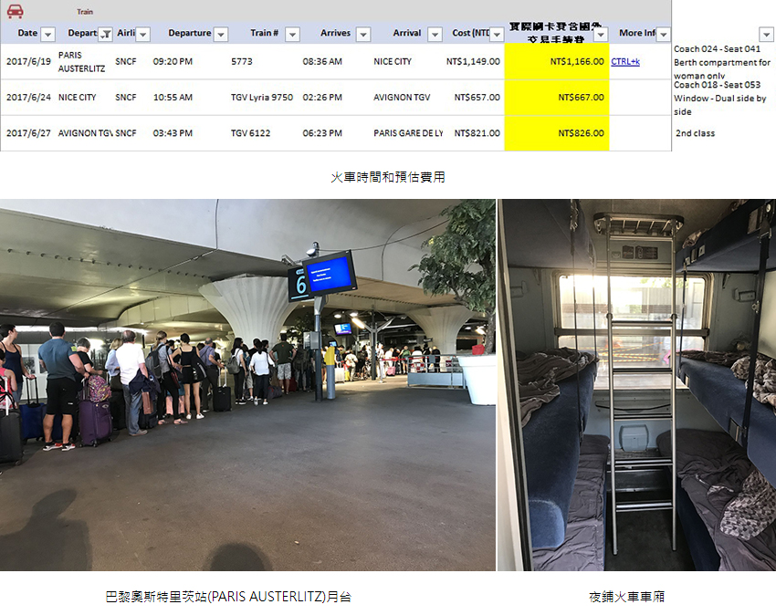
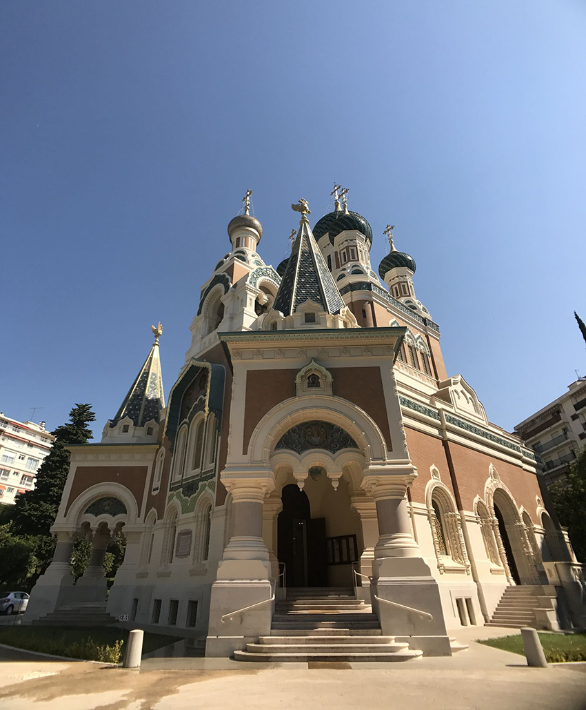
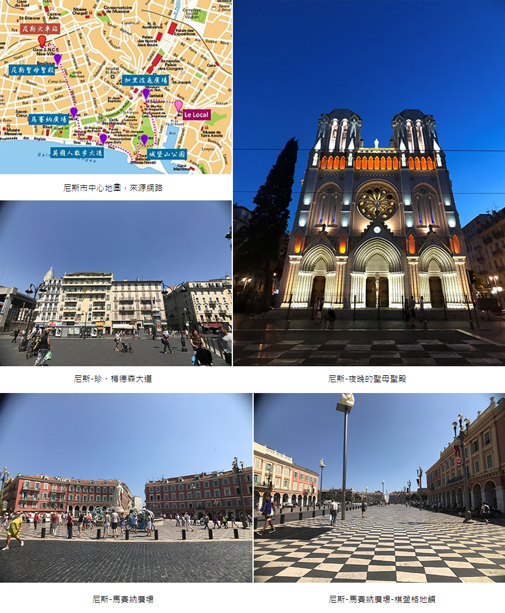
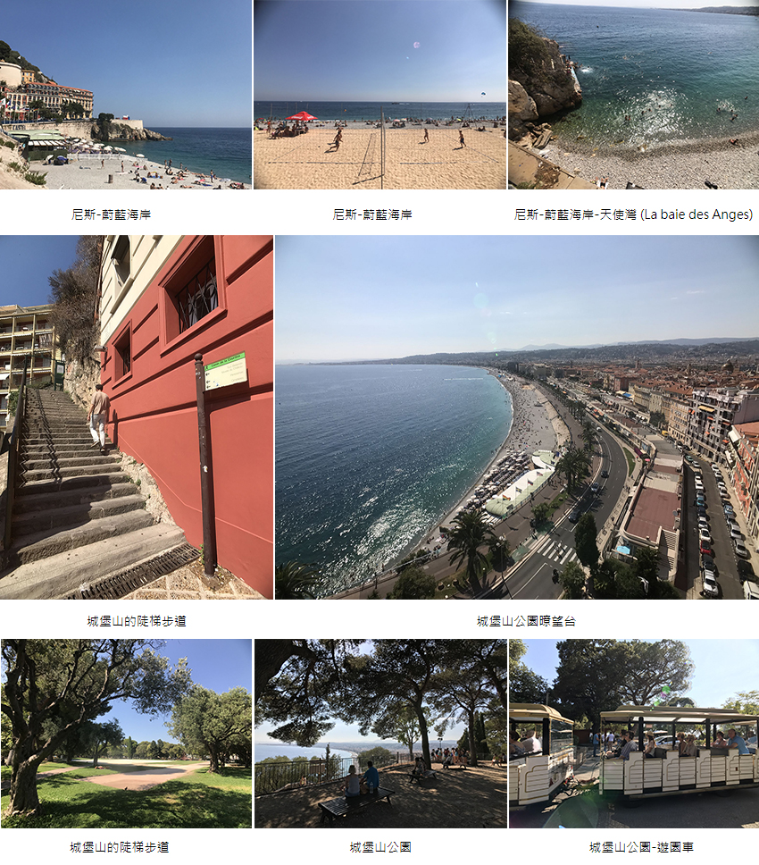
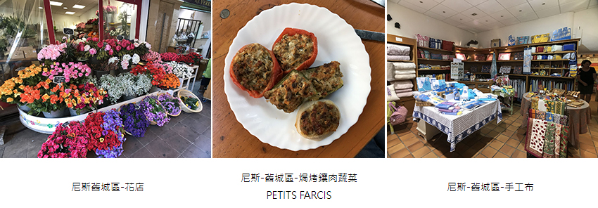
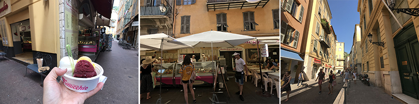

從規劃到出發1~2個月的時間，匆忙情急下，不足以幻想身處南法是什麼感覺，直到真正抵達…初來乍到，內心澎湃外表看不出，南法環境人事物的悠悠然然和內心形成強烈對比，試著催眠自己「入境隨俗」。
從巴黎搭夜間火車到尼斯。巴黎的微郊區入夜後變得蕭條；但車站內可不是這樣。巴黎奧斯特里茨站(PARIS AUSTERLITZ)月台擠滿搭車民眾，既然人多、人少都是擔心，不如就微笑但不鬆懈，上車吧。體驗夜鋪火車一點也不舒適，火車高度就那樣，卻塞了3張床，每廂2側，塞了6張床，不高的我頻頻撞頭，下次要選高一階的臥鋪房(笑)。歷經11個半小時終於抵達尼斯。
|  |
日正當中抵達尼斯，第一站前進「聖尼古拉主教座堂」Cathédrale Orthodoxe Russe St Nicolas，拜占庭風格的東正教禮拜堂與花園，建成於1912年，為紀念俄羅斯帝國皇儲-尼古拉亞歷山德羅維奇所建造。是俄羅斯境外最大的一座主教座堂，異域風格維護得很好，莊嚴肅穆對到訪者的穿著有要求。
|  | ||
| 尼斯-聖尼古拉主教座堂 |
離開主教座堂，走回尼斯火車站。順著「珍．梅德森大道」Av. Jean Médecin像散步在海風吹拂版的忠孝東路，百貨、銀行、餐廳林立，好不熱鬧 。行經白天和夜晚各有千秋的「聖母聖殿」Basilique Notre-Dame de l’Assomption，這座哥德式風格「宗座聖殿」，興建於1864年到1868年，是尼斯最大的教堂。
「珍．梅德森大道」直通「馬賽納廣場」Place Massena，這裡是尼斯市中心大型廣場，它最初由2個廣場集結而成，規模之大，也是大家聚集放鬆的大型公園，跳舞、演奏、夜晚播放燈光秀、甚至是玩水的地方，來到尼斯千萬不要錯過好玩、好逛的棋盤格地舖「馬賽納廣場」喔！
|  |
從廣場走向海邊接「盎格魯街」Promenade des Anglais，走在其中不得不說，尼斯海洋擁有美妙的蔚藍色調，蔚藍海岸非浪得虛名啊！也是為什麼最初英國富豪尬意來尼斯避寒度假。1820年富豪們甚至加碼回饋尼斯，決定在海邊修築寬闊的漫步大道，這條「盎格魯街」就是今日人稱「英國人步行道」。
一邊看礫石灘、人工沙灘玩樂地人們；一邊往東邊ILoveNICE裝置藝術走去，會看到城堡山的步道和電梯，我的天使與魔鬼拉鋸戰很短，大概1秒鐘就決定一步一腳印細嚼慢嚥步道，陡梯也沒讓我失望，一層層美景逐步揭曉，10分鐘後抵達制高點「城堡山公園」Colline du Château，暸望台景色更是令人心曠神怡。往深處走發現它其實真的是一個大型公園，有遊園車也有瀑布，也有紀念館區。
|  |
下山直奔舊城區「賽雷亞花果市集」Marché Aux Fleurs Cours Saleya，市集販賣許多特色伴手禮，有手工皂/香包/毛巾/磁鐵/手工布袋…等，適合短暫停留的旅人，也有當地人採購新鮮花卉、臘肉、水果、海鮮、麵包。什麼都有，什麼都不奇怪。在舊城區，我發現一樣非常適合台灣人的尼斯當地小吃。當興高采烈從蔚藍海岸玩回市場覓食時，這道「焗烤鑲肉蔬菜」PETITS FARCIS，無論是冷是熱配上紅酒或啤酒，都已經使我陶醉且延續剛才的歡欣鼓舞。
|  |
Fenocchio冰淇淋是尼斯最有名的冰淇淋店，來尼斯沒吃過這家，就不算有來。滿滿的四台大冰櫃，口味將近上百種。4天內我特地過來吃2次。正對我胃。完美。
|  | ||
| 尼斯-舊城區-Fenocchio冰淇淋 | 尼斯-舊城區-Fenocchio冰淇淋 | 尼斯-舊城區 |
相較於南法其他城市，我更推薦駐點於尼斯和亞維儂，治安相對安全，且方便放射狀玩法-點對點玩。雖然2016年尼斯曾經發生恐攻事件，隔年2017年造訪時，觀察到當地政府增加維安部屬，著實安心不少。駐點在尼斯，交通便利，可搭公車通往坎城 ( Cannes)、昂蒂布 ( Antibes )、埃茲（Eze）、摩納哥（Monaco）、芒通（Monaco）…等蔚藍海岸城市一網打盡。每個小鎮搭乘時間不過30分鐘，若跟我一樣喜歡慢遊欣賞窗外景致，強烈推薦公車遊小鎮。還有好多地方沒能一一介紹，深藏在心中，真是可惜。有機會再推薦給大家！